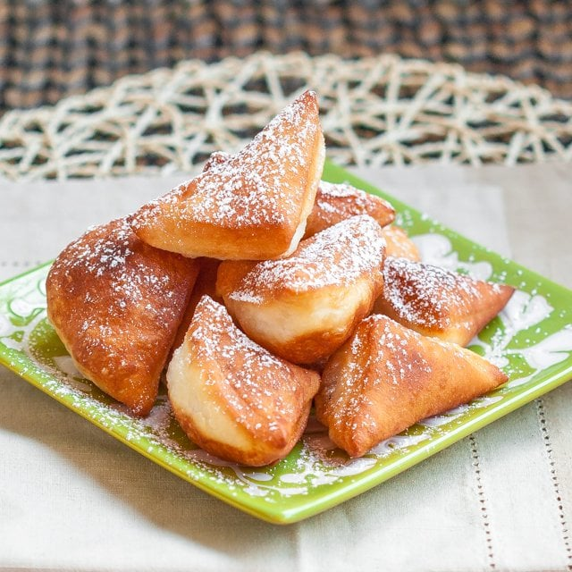

Chapati

Description
Mandazi is a popular East African snack, similar to a donut but with a denser texture. It's made from flour, coconut milk, sugar, and spices like cardamom, then deep-fried until golden brown. Often enjoyed with tea or coffee, mandazi is loved for its subtly sweet flavor and fluffy interior.
Ingredients
- 2 cups flour
- 1/4 cup sugar
- 1/2 tsp cardamom
- 1/2 cup coconut milk
- 1 tbsp melted butter
Steps
- Mix flour, sugar, cardamom, and salt.
- Add coconut milk and melted butter/oil; knead into dough.
- Fry in hot oil until golden (2-3 mins per side).
- Drain and serve warm.